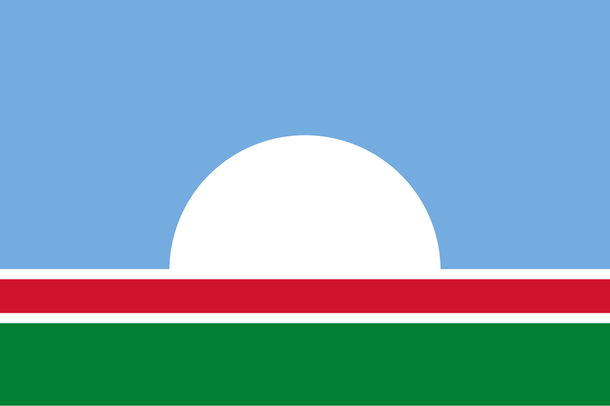
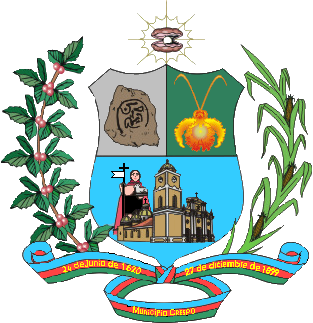
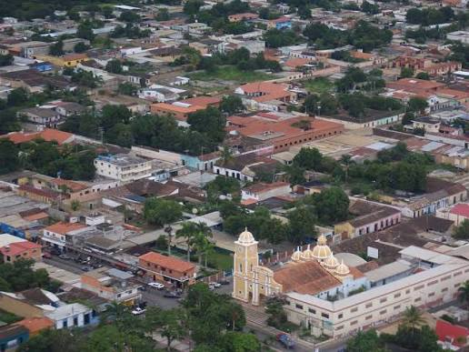

Símbolos Patrios Municipales
La Bandera del Municipio

Diseñada por Juan Vides, la bandera del Municipio Crespo posee una forma rectangular dividida por tres franjas horizontales de distintas proporciones, separadas sutilmente por filetes blancos que simbolizan la pureza y la integración comunal.
- Franja Azul: Simboliza la serenidad, la hospitalidad de los crespenses y el excelente clima. Representa la lealtad, los altos ideales y la justicia.
- Franja Roja: Centraliza el espíritu combativo, el valor y el atrevimiento de su gente para consolidar los proyectos históricos del municipio.
- Franja Verde: Evoca la inmensa vocación agrícola de sus tierras, las cadenas montañosas de Duaca, la abundancia y la esperanza laboral.
* Nota: Centrado en la base verde reposa una perla de plata en semicírculo, símbolo de Duaca, conocida como "La Perla del Norte".
El Escudo de Armas

El blasón del Municipio Crespo presenta una estructura de forma alemana, clasificado heráldicamente bajo la disposición de cortado medio partido. Su diseño integra los valores aborígenes, ecológicos y arquitectónicos de la región.
- Primer Cuartel (Superior Diestro): En campo de plata, resguarda el petroglifo de Tumaque, símbolo originario de las raíces indígenas y testimonio de la verdad histórica.
- Segundo Cuartel (Superior Siniestro): En campo verde, exhibe una Orquídea Mariposa en oro, declarada flor emblemática local por su presencia en las montañas.
- Tercer Cuartel (Inferior): En campo azul que simula los cielos diáfanos, muestra la fachada de la Iglesia de San Juan Bautista, faro arquitectónico y espiritual de Duaca.
Himno Oficial del Municipio Crespo

Letra: Ezquilo Yépez
Música: Bruno Vianchi
Símbolo Municipal Oficial
CORO
San Juan Bautista señala el camino
de un pueblo noble dispuesto a luchar
Trabajadores como no hay igual.
Labrando todos místico destino.
Estrofa I
El Azulejo, nos suele contar
Lo que estaba en la historia escondido,
Somos del norte, lo dijo cupido,
Toda una perla para conquistar.
Nuestros indios supieron honrar,
El producto del suelo nativo,
Y nos dieron regalos nutridos,
Un paisaje que es como un altar.
Estrofa II
Cinco Cúpulas pueden indicar
En nuestro templo, fúlgido camino,
Rogamos a Dios por el vecino
Y porque el mundo consiga la paz.
El Fray Miguel nos puede mirar,
Y sentirse ya muy complecido,
El gentilicio lo hemos asumido,
Como se asume misión militar.
Estrofa III
Todo Duaqueo te sabe brindar,
Un tesoro en rubíes cuajado,
Que conforta, en jarros obsequiado,
Rica bebida para deleitar.
Nuestra mirada podemos posar,
Con la firmeza del ser realizado,
Porque siempre se nos ha enseñado,
La verdad como puerta para triunfar.